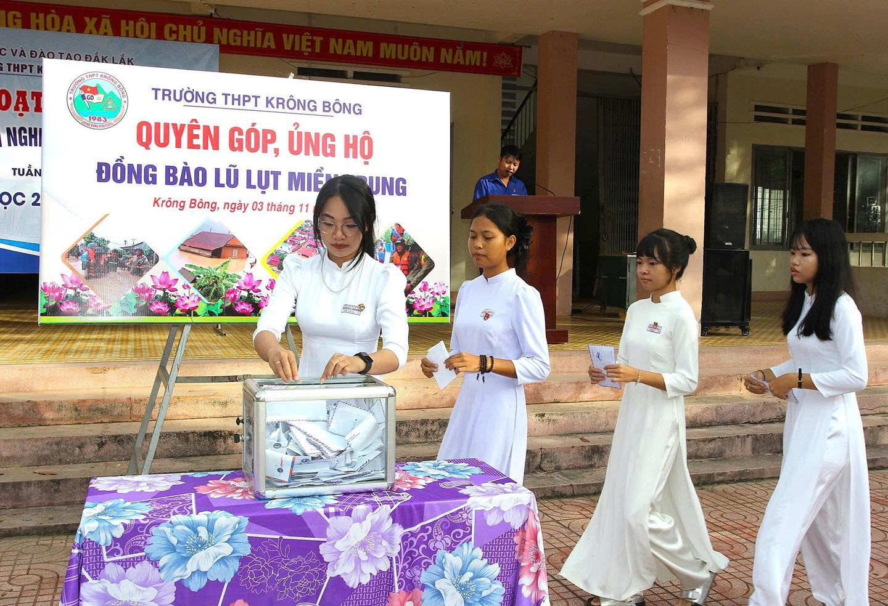
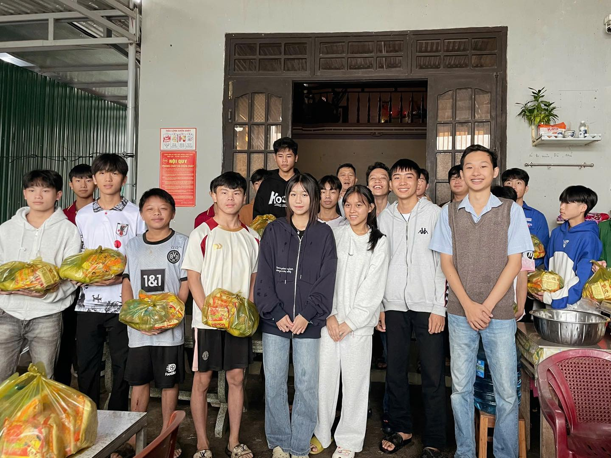

Hành Trình Lan Toả Yêu Thương
Hành Trình Lan Toả Yêu Thương là chuỗi hoạt động ý nghĩa, nơi mỗi người cùng chung tay chia sẻ, giúp đỡ, mang yêu thương đến cộng đồng, lan tỏa tinh thần nhân ái và xây dựng một xã hội ấm áp, đầy yêu thương.
Những hành trình học tập, cảm hứng và khát vọng của học sinh THPT Krông Bông.
Mỗi học sinh đều có một câu chuyện riêng — về nỗ lực, đam mê và ước mơ. Thư viện này là nơi để chia sẻ, để lan tỏa tinh thần học hỏi và kiên trì vượt khó.

Hành Trình Lan Toả Yêu Thương là chuỗi hoạt động ý nghĩa, nơi mỗi người cùng chung tay chia sẻ, giúp đỡ, mang yêu thương đến cộng đồng, lan tỏa tinh thần nhân ái và xây dựng một xã hội ấm áp, đầy yêu thương.
Niềm Vui Khi Được Chia Sẻ là hạnh phúc giản dị khi ta trao đi yêu thương, giúp đỡ người khác, để thấy lòng mình ấm áp, cuộc sống thêm ý nghĩa và gắn kết con người bằng tình cảm chân thành.
